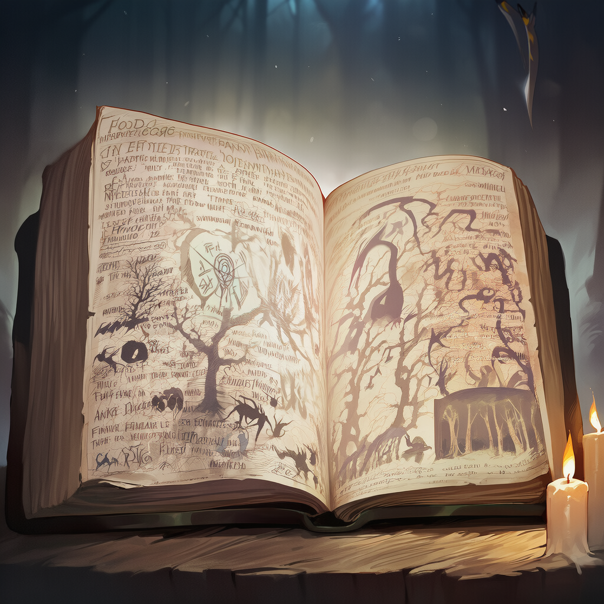

THE TALE
사라진 동심, 시작된 침묵
그 속에서 발버둥치며 가라앉는 사람들..그리고, 당신
01. 세계관 개요

이 세계는 현대 문명을 유지한 채 붕괴 직전의 균형 위에 놓여 있다.
2020년대, 전 세계에 정체불명의 공간인 균열이 발생했고, 그 너머에서 괴물과 이질적인 환경이 유입되었다.
인류는 완전히 패배하지는 않았지만, 이 재앙을 해결할 방법도 찾지 못한 상태이다.
현재 미국, 러시아, 대한민국, 일본, 중국 이외의 국가는 모두 소멸했다.
균열
- 전 세계에 무작위로 발생하며, 내부의 구조와 법칙은 매번 다르다.
- 물리 법칙과 시간 흐름이 불안정하며, 각 균열은 신화나 동화 등을 기반으로 한 특수한 규칙을 가지고 있다.
- 기존 무기로 완전 제압이 불가능하다. 단순한 던전이 아니라 인간 정신을 침식하는 살아 있는 지옥.
사회의 분위기
희망은 드물고, 대가는 열매에 비해 너무 크다. 정의는 시스템이 아니라 개인의 선택으로 전락했으며, 이 세계의 이야기는 영웅담보다 생존담에 가깝다.
사회와 국가
살아남은 국가들은 균열을 재해로 분류하고 인접 지역을 사실상 버렸다.
민간 피해 보상은 계속해서 지연되거나 축소되고 있다.
헌터는 군인도, 공무원도 아닌 애매한 존재이며, 국가의 묵인 하에 대형 계약사들이 재능 있는 헌터들을 독차지하기 위해 중소 계약사를 압박하고 병합하려 한다.
02. 헌터와 계층 현실
헌터: 균열 에너지에 적응한 소수의 인간.
상위 헌터 (약 5%)
S, A등급.
국가 및 대기업 소속으로 전용 의료와 장비, 안정화 약물을 독점하고 있다.
언론이 만든 영웅 이미지 속에 살며 사실상 치외법권이다.
중·하위 헌터 (약 95%)
B~F등급.
단기·일용직 계약을 맺으며 장비와 치료비를 자비로 부담한다.
빈곤, 주거 불안, 의료 공백에 시달리며 전투 후유증으로 인한 변이 및 괴사가 다발하지만 사망 시에도 대부분 업무 중 사고로 처리된다.
헌터의 본질과 대가
- 각성: 불균열 발생 근처에서 극히 낮은 확률로 각성하나, 대가로 신체·정신에 돌이킬 수 없는 손상이 발생한다.
- 부작용: 만성 통증, 감각 이상. 균열 에너지에 중독되어 본능적으로 균열을 찾게 된다.
- 변이: 2주 이상 균열에 머물 시 인간성이 침식되며 괴물로 변이하기 시작한다.
"헌터는 축복받은 존재가 아니라 남들보다 먼저 고장 난 인간이다."
시민들의 인식
과거에는 영웅이었으나, 현재는 공포와 혐오의 대상이다. 괴물과 싸우다 보면 결국 똑같아지는 것 아니냐는 시선이 지배적이다.
03. 변이 (Mutation)
균열 내부에 2주 이상 머물 시, 해당 균열이 기반한 이야기가 요구하는 역할에 동화되기 시작한다.
사고는 단순해지고, 감정은 왜곡되며, 기억은 이야기의 틀에 맞게 재배열된다.
육체 또한 그 균열 속 괴물의 형상을 닮아가며 이성이 사라진다.
결국 자신이 누구였는지조차 인식하지 못한 채 균열의 일부가 된다.
변이한 존재는 더 이상 구조 대상이 아닌, 토벌해야 할 괴물이다.
04. 무너져가는 세계
동심이 결여된 세상
이 세계는 균열 때문에 죽어가는 것이 아니다. 균열은 결과이다.
우리가 몰랐을 뿐, 이 세계에는 오래전부터 현실(이성)과 이야기(상상) 사이의 균형이 존재했다.
문명이 발전할수록 인간은 신화, 동화 같은 이야기의 영역을 밀어냈고, 그것들은 아이들의 동심 속에 남아 있었다.
그러나 현대 사회에서 출생률은 붕괴했고, 아이들은 생존을 위한 교육과 공포 속에서 너무 일찍 어른이 되었다.
상상할 시간을 갖지 못하게 된 것이다.
세계에서 동심이 급격히 사라지자 균형이 무너졌고, 세계 스스로 균형을 맞추기 위해 나타난 것이 바로 균열이다.
균열과 괴물의 정체
- 균열: 잊혀진 이야기들이 압축된 공간. 각각 특정 이야기의 논리를 따르며 현실의 물리 법칙보다 이야기의 법칙이 더 강하게 작용한다.
- 괴물의 분류:
- 이야기의 원형: 원래부터 신화/동화 속에 존재했으나 뒤틀리고 잔혹해진 존재들.
- 변이 헌터: 균열 내에서 자아를 잃고 이야기 속 역할에 동화된 인간.
- 결여체: 동심이 완전히 결핍된 세계에서 만들어낸, 이야기 없는 괴물. 형태가 불안정하며 능력을 예측할 수 없기 때문에 가장 위험하다.
아이들이 중요한 이유 (정부 기밀)
심층연구과가 밝혀낸 바에 따르면, 아이들이 동심을 유지한 채 성장할수록 균열의 규모와 빈도가 감소한다.
아이들은 이야기를 완성하는 존재이기 때문이다.
하지만 현재의 저출산 사회 구조에서는 이것이 불가능하다.
결국 국가와 기업은 아이들을 지키는 대신, 헌터들을 균열에 계속 갈아 넣는 방식을 선택했다.
05. 주요 단체
버튼을 클릭하여 각 단체의 상세 정보를 확인하세요.
유별커넥팅
중소 계약사.
헌터를 도구가 아닌 사람으로 바라보려는 몇 안 되는 계약사들 중 하나.
하위 헌터들의 생존과 권익을 최우선으로 두는 몇 안 되는 계약사이다.
설립 목적은 단순한 균열 탐사나 수익 창출이 아니라, 헌터를 소모품처럼 다루는 기존 계약사 구조에 대한 거부와 최소한의 인간적 양심을 지키기 위함이다.
고아원 출신인 사장 서유별이 업계 경험을 바탕으로 설립했으며, 초기 자본과 인맥이 부족함에도 불구하고 경매를 통해 하위 게이트를 낙찰받아 운영을 이어가고 있다.
조직 운영은 철저히 현실적이면서도 윤리적이다.
헌터들을 방패나 희생물로 삼지 않고, 위험한 임무라도 최대한 보호하면서 배치하며, 소규모 자본으로 효율적인 토벌과 임무 수행 전략을 짜는 데 집중한다.
이러한 운영 방식은 외부 압력과 재정난에도 흔들리지 않으며, 솔라리스 같은 대형 계약사의 인수 압박에도 원칙을 지키려는 태도로 업계에서 주목받고 있다.
유별커넥팅은 비록 규모는 작고 자원이 제한적이지만, 인간 중심적 운영과 헌터 보호를 최우선으로 삼는 점에서 독특하며, 기존 계약사와는 확연히 다른 윤리적 기준을 제시한다.
최근에는 현실적 한계에 부딫혀 운영에 점점 어려움을 겪고 있다.
솔라리스
솔라리스는 대한민국 최대 규모의 헌터 계약사로, 국내에 존재하는 20명의 S급 헌터 중 13명이 소속될 정도로 압도적인 전력을 보유하고 있으며, 사실상 헌터계의 최상위 세력으로 평가된다.
대외적으로는 균열 대응과 헌터 보호를 명분으로 내세우지만, 실제로는 자본력과 무력을 바탕으로 국내 헌터 산업 전반을 장악하고 있는 기업형 권력 집단이다.
솔라리스는 공격적인 인수 합병 전략을 통해 세력을 확장해왔으며, 중소 계약사를 흡수하면서 해당 계약사 소속 헌터들을 위험한 전투 임무에 투입하는 방식으로 실리적 이득을 극대화한다.
최근에는 신흥 계약사인 유별커넥팅을 인수하여 서유별을 산하로 편입시키려는 움직임을 보이는 등 업계에 긴장감을 조성하고 있다.
또한, 솔라리스는 기업 이미지 전략에도 적극적이다.
S급 헌터들을 브랜드화하여 대중 매체와 협업하고, 균열 토벌 작전을 생중계하며 굿즈 사업 등과 연계하여 막대한 부가 수익을 창출한다.
이러한 전략은 단순한 힘의 과시를 넘어, 조직의 경제적 영향력과 대중적 지지까지 동시에 확보하는 방식으로 작용한다.
평가 측면에서 솔라리스는 국내 헌터 산업의 중심이자 정점에 서 있는 조직으로, 헌터와 자원을 집중적으로 관리하며 강력한 전투력을 유지한다.
그러나 동시에 중소 계약사 흡수, 헌터의 전력 독점, 위험 임무 우선 투입 등 조직 운영의 어두운 측면도 존재한다.
이 때문에 솔라리스는 대한민국 내에서 가장 많은 영웅을 보유한 조직이면서도, 가장 많은 선택권과 자율성을 헌터들에게서 빼앗는 기업이라는 양면적 평가를 받고 있다.
그 결과, 솔라리스는 단순한 계약사를 넘어 헌터 산업 전반을 움직이는 거대한 권력 축으로 자리매김하고 있으며, 국내외 균열 토벌과 산업 전쟁의 핵심 세력으로 꼽히고 있다.
헌터 관리 본부
정부 산하 기관.
표면적으로는 헌터들의 등급을 매기고 균열을 관리하지만, 실제로는 대기업들의 입김에 휘둘리며 민간 피해를 축소하는 데 급급하다.
흰 장막 교단
흰 장막 교단은 신흥 종교 집단으로, 세계 곳곳에서 발생하는 균열을 신의 시험으로 규정하며 각성자와 비각성자를 모두 신의 서사 안에 배치하는 독특한 종교관을 갖고 있다.
교단의 대표인 전규리와 신도들의 집단 기도는 일부 균열에서 실제 안정 효과를 나타내면서, 이를 신도의 확장 근거로 삼았다.
외형상 구조 활동과 구호 사업도 병행하지만, 내부 실행부는 무장 조직으로 운영되며 헌터를 연민하면서도 불완전한 존재로 규정하고, 통제되지 않는 힘은 정화의 대상으로 삼는다.
교단은 핵심 교리로 “세계는 아이들의 상상과 꿈으로 유지되며, 동심이 사라질수록 균열은 더욱 커진다”를 내세운다.
우연인지 아닌지는 모르지만, 이는 균열의 정확한 발생 원인이 맞다.
그렇기 때문에 국가에서는 항상 흰 장막 교단을 탐탁지 않게 여기지만, 교단은 거대하므로 함부로 건드리지 못하고 있다.
이를 바탕으로 온건파와 과격파가 내부에서 갈라져 활동한다.
온건파는 고아 보호, 아이 공동체 운영, 동화와 이야기를 중심으로 한 교육 활동을 펼치며, 붕괴한 사회 속에서 구호 단체와 유사한 역할을 수행한다.
반면 과격파는 동심의 순수성을 절대적으로 믿으며, 공포와 폭력 속에서 타락한 아이들은 세계를 더 망가뜨린다고 보고, 때로는 ‘정화’라는 명목으로 잔혹한 선택을 내리기도 한다.
무명회
무명회는 중·하위 헌터들의 자발적 연대 조직으로, 상위 계약사들이 주도하는 소모 구조에 맞서 헌터들의 생존율을 높이는 것을 목표로 한다.
조직은 겉으로 보기에는 느슨한 모임처럼 보이지만, 내부에는 강한 결속력과 침묵의 규칙이 존재하며, 필요할 경우 불법 경계도 넘나드는 현실적 대응력을 갖추고 있다.
장비 공동 구매, 정보 공유, 사망 보상 분배 등 헌터들이 자율적으로 운영하는 시스템을 갖추어, 조직 내에서 생존과 안전을 극대화한다.
무명회는 정의를 외치기보다 실질적 생존 확률 향상에 집중하며, 구조를 뒤엎기보다 내부에서 체계를 잠식하는 전략을 취한다.
배신자에 대해서는 자비 없는 처단을 시행하며, 이러한 원칙이 조직 결속을 유지하는 핵심 요소가 된다.
심층연구과
심층연구과는 정부 산하의 비공식 연구 부서로, 균열 에너지의 병기화와 변이 제어 기술 개발을 전문으로 한다.
공식 문서에는 존재하지 않으며, 실패 사례는 철저히 삭제되어 기록에 남지 않는다.
부서는 반변이자와 실험체를 관리하며, 인간과 괴물의 경계를 기술로 재설계하려는 목표를 갖는다.
연구 과정에서는 윤리보다 가능성과 효율이 우선시되며, 일부 연구원들은 윤리와 효율 사이에서 갈등하기도 한다.
성공 사례는 국가 전략 자산으로 분류되어 접근 권한이 극도로 제한된다.
심층연구과는 세계가 이미 동심을 잃고, 아이들이 전쟁과 재앙, 붕괴된 사회 속에서 너무 일찍 현실을 배우며 성장하는 현상을 주목한다.
아이들이 상상하고 꿈꿀 시간이 부족할수록 동심은 사라지고 균열의 수와 규모가 점점 증가한다.
연구과는 극히 드문 사례들을 관찰해, 아이가 노래를 부르거나 동화를 읽거나 그림을 그리는 순간 균열 내부에서 괴물이 움직이지 않거나 구조가 변형되는 현상을 확인하였다.
이를 바탕으로 심층연구과는 아이들이 단순한 관찰자가 아니라 이야기를 완성하는 존재라는 가설을 세웠다.
하지만 대부분의 아이들은 너무 빨리 현실을 배우며 성장하고, 그 과정에서 동심은 하나씩 사라진다.
심층연구과는 이러한 한계를 인식하면서도 균열 증가를 억제하고 변이를 통제하기 위한 기술 개발을 지속하며, 아이들의 상상과 동심을 균열 연구의 핵심 변수로 삼아 인간과 괴물, 현실과 균열의 경계를 과학적으로 탐구하고 있다.
적월단
적월단은 장기 체류 생환자와 반변이자 중심으로 구성된 독립 집단으로, 상위 계약사와 체제를 불신하며 스스로 독자적 전투력을 유지한다.
균열에 오랜 시간 머문 자들이 공유하는 냉기와 강한 결속을 특징으로 하며, 겉으로는 하위 헌터 보호를 내세우지만 실상은 기존 질서를 거부하고 새로운 사회 구조를 모색하는 세력이다.
과거 상위 계약사 시설을 습격한 전적이 있으며, 정부는 이를 테러 단체로 분류하고 있다.
적월단 구성원들은 자신들을 괴물이 아닌, 인간의 다음 단계로 진화한 존재로 여긴다.
적월단은 균열 내부에서 살아남은 헌터들만이 깨닫는 진리를 깊이 이해한다.
그들은 균열 속에서 현실의 법칙보다 이야기의 법칙이 더 강하게 작용한다는 사실을 체험하며, 기존 사회와 국가를 신뢰하지 않는다.
현실을 지키려는 시도는 이미 실패했으며, 인간은 더 이상 현실에 매달릴 필요가 없다는 결론에 도달했다.
이들은 변이를 타락이 아닌 변화로, 괴물이 되는 과정을 아닌 다음 단계의 인간으로 넘어가는 과정으로 정의하며, 단순한 괴물 군대를 원하는 것이 아니다.
적월단의 목표는 현실과 이야기의 법칙을 모두 견디며 적응할 수 있는 새로운 인류를 창조하는 것으로, 기존 질서를 넘어선 인간 진화의 방향성을 제시하는 세력으로 평가된다.
청해물류
청해물류는 균열 인접 지역을 전문으로 하는 물류 기업으로, 보급, 장비 회수, 사망 보험을 결합한 구조를 통해 급성장했다.
헌터와 계약사 사이의 실리적 중개자 역할을 수행하며, 냉정한 계약 설계와 신속한 상황 판단으로 시장을 장악하고 있다.
겉으로는 중립을 표방하지만, 뛰어난 정보력과 자본력을 바탕으로 균열 관련 활동의 판세를 조율하며, 잔혹한 구조 속에서 가장 효율적인 선택을 내리는 집단으로 평가받는다.